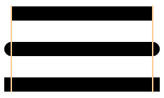
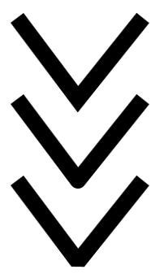

Line ends and Line joins
Ongoing HTML5 Canvas Tutorial: 1 2 3 4 5 6 7 8 9 10 11 12 13 14 15
As well as setting the width of your lines you can also set the line ends (caps) and the line joins. Use your code from the previous section for this lesson, or create a new web page from your template.
Line Caps
A line cap is what you want the end of your lines to look like. To see what choices you have, study the following image.

The first one is the default cap, and is called a butt. You don't have specify a line cap if you only want the default. The second one in the image above is if you want rounded ends on your lines. The final line has square ends. Notice how the round and square ends add length to each line.
The code for line caps is this:
canvas_context.lineCap = "round";
Instead of a value of "round" you can have "square" or "butt". If you want to try them out, here's some code for you:
canvas_context.beginPath();
canvas_context.lineWidth = 20;
canvas_context.lineCap = "round";
canvas_context.moveTo(50, 100);
canvas_context.lineTo( 250, 100);
canvas_context.stroke();
The code above also sets a line width with this:
canvas_context.lineWidth = 20;
To get just the one line select a starting position with moveTo You can then use LineTo for the end of your line.
Exercise
In the code above, the Y values are the same - 100. What do you think would
happen if you had a different value for Y in lineTo( 250, 100)?
Exercise
Experiment with the square and butt values. Try to reproduce our image from
above.
Line Joins
You can also have a different style for when two or more of your lines meet. The choices you have are miter (American spelling), round and bevel. Miter is the default. Here's what they look like:

If you look at the bottom of the V you'll see the three different styles. The
first is a miter join, the second is a round join, and the third is a bevel.
The code for a join is this:
canvas_context.lineJoin = "round";
And here's the code for the round V above:
canvas_context.beginPath();
canvas_context.lineWidth = 20;
canvas_context.lineJoin = "round";
canvas_context.moveTo(75, 150);
canvas_context.lineTo(150, 250);
canvas_context.lineTo(230, 150);
canvas_context.stroke();
Exercise
Experiment with the other two joins. Try to reproduce our image from above.
In the next part, we'll take a look at how to get a gradient fill for shapes.